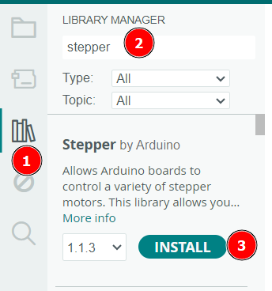

Schrittmotoren drehen sich in winzigen Schritten. Bei unserem Modell ist eine 360°-Umdrehung in 2048 Schritte unterteilt. Pro Schritt dreht sich der Motor also um 360°/2048 = 0,175°. Damit sind sehr feine Bewegungen möglich.
Schrittmotoren werden zum Beispiel in 3D-Druckern verwendet.
2. Bestandteile
Schrittmotoren enthalten im Gehäuse stets ein Getriebe, durch dass die Bewegung des Motors verlangsamt und sein Drehmoment erhöht wird. Grundsätzlich haben auch kleine Schrittmotoren ein hohes Drehmoment.
3. Verkabelung
Der Schrittmotor wird mit einem speziellen Kabel an das Steuermodul angeschlossen.
Dieses Steuermodul wird mit dem Arduino verbunden:
-: GND
+: +5V
IN1: Pin 6
IN2: Pin 5
IN3: Pin 4
IN4: Pin 3
Über GND und VCC erhält das Modul die Betriebsspannung. Mit dieser Spannung wird auch der Motor versorgt.
Über IN1-IN4 werden die Steuersignale an das Modul gesendet.
4. Programmierung
4.1 Installation der Stepper-Bibliothek
Für die Programmierung des Schrittmotors benötigen wir wieder eine Bibliothek:

Aktiviere den Bibliotheksmanager
Tippe den Suchbegriff "Stepper" ein.
Installiere die Stepper-Bibliothek von Arduino.
4.2 Einfaches Rotations-Programm
Mit dem folgenden Programm dreht der Stepper einmal langsam um 180° und anschließend wieder zurück.
#include<Stepper.h>// Einbinden der Bibliothek.int SPU = 2048; // 2048 Schritte pro 360° UmdrehungStepper motor(SPU, 3,5,4,6); // Ein Motor-Objekt wird an den Pins 3,5,4 und 6 angeschlossenvoidsetup(){
motor.setSpeed(5); // Geschwindigkeit: 5 Umdrehungen pro Minute
}
voidloop(){
motor.step(2048); // 2048 Schritte = 360°delay(1000); // 1 Sek. Pause
motor.step(-2048); // 360° rückwärtsdelay(1000); // 1 Sek. Pause
}
Anpassungen
Ändere das Programm ab, so dass
der Motor nur noch 90° weit dreht.
der Motor doppelt so schnell dreht, also mit 10 Umdrehungen pro Minute.
der Motor einen Sekundenzeiger antreibt, sich also jede Sekunde um 6° dreht.
Berechne hierzu die nötige Schrittzahl: 360° ≙ 2048 Schritte ⇒ 6° = 2048/60 = 34 Schritte.